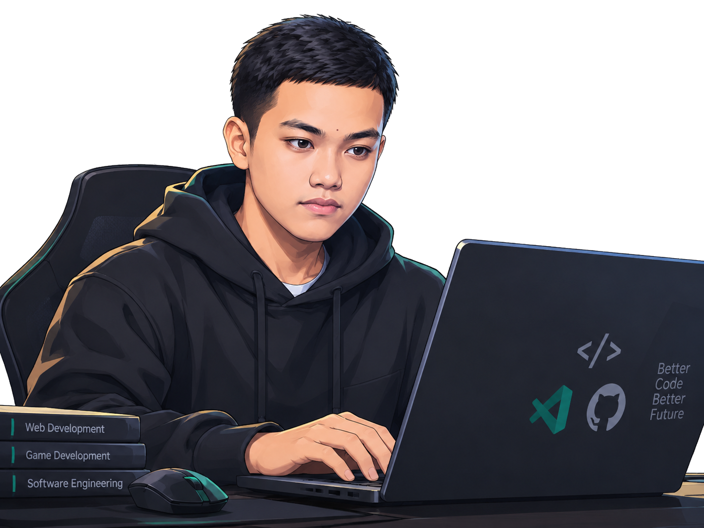

Web Development
Websites and information systems, from interface layouts to data-driven pages.
STUDENT DEVELOPER CIBINONG, ID
Building Web, Software & Interactive Experiences.
I'm a Web Developer, Software Developer, and Game Developer
Saya siswa SMK Negeri 1 Cibinong jurusan Pengembangan Perangkat Lunak dan Gim (PPLG) yang tertarik mengembangkan website, aplikasi desktop, dan game interaktif. Saya senang mengubah ide menjadi solusi digital melalui pemrograman, eksplorasi teknologi, dan pengembangan project.

</> WEB⌘ SOFTWARE◈ GAMESconst developer = {
name: "Revan",
learning: true
};01 A LITTLE ABOUT ME
Halo, saya Revan Oknanda. Saya memiliki minat dalam pengembangan perangkat lunak, mulai dari website dan aplikasi desktop hingga game interaktif.
Melalui project yang saya kerjakan, saya terus mempelajari logika pemrograman, pengelolaan database, perancangan antarmuka, debugging, dan penggunaan Git untuk mengelola kode.
Setiap project menjadi kesempatan untuk mencoba ide, memahami proses pengembangan, dan terus meningkatkan kemampuan.
Terminal introduction: Revan Oknanda. Skills include PHP, JavaScript, Python, Dart, and C sharp. Interests are web development, software development, and game development.
02 AREAS I'M EXPLORING
Different kinds of digital experiences
I'm learning to design and develop.
Websites and information systems, from interface layouts to data-driven pages.
Desktop applications and data tools with practical workflows and clear interfaces.
Interactive ideas, game logic, dialogue, and small experiences to explore.
Programmed responses and workflows that make repetitive tasks easier.
03 MY TOOLKIT
A snapshot of my current toolkit.
Growing with every project.
04 SELECTED WORK
A collection of applications, games, and digital
experiences I've worked on.
05 LEARNING MILESTONES
Sertifikat asli tersimpan di folder sertifikat/.
Pilih preview atau buka file aslinya.
ORIGINAL DOCUMENTS · sertifikat/
LET'S CONNECT OPEN TO OPPORTUNITIES
Find Me Online.
Have a project in mind or want to say hello? Find me on these platforms.
ONE MESSAGE AWAY ↘